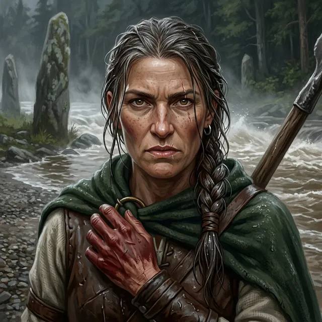

The red-handed woman
The woman at the front of the clan line at Harrow Ford
Only what the story has shown so far.
Appearance
Forty or more, which was older than she looked from across the water: a weathered, freckled face with high cheekbones and a strong nose, amber-brown eyes under heavy brows, a scar through one eyebrow, and the patient, furious look of a woman who had been right about something for a long time. Her dark hair, gone grey at the temples, was slicked back wet and bound in one long braid with a leather thong, and a small iron ring hung in one ear. Her hands were painted red to the wrist; she wore a dark green wool mantle pinned with a bronze ring brooch over a leather jerkin and a coarse undyed tunic, with the haft of a spear over her shoulder, all of it soaked through. Darrow saw her first knee-deep in the shallows at the front of the clan line, then waist-deep and breathing hard over him on the far bank, having hauled a man in mail through the water by the collar of his gambeson.
Now
Last seen Prologue · I — Harrow Ford
Gone from the far bank of the Wend between one look and the next. Darrow turned back from the river and she was not there, and he has not seen her since.
Story so far
She stood at the front of the clan line at Harrow Ford, knee-deep in the shallows with her hands painted red, and looked at Darrow and no one else before calling something across the water in her own tongue that the river took. Darrow read the line she stood in as drawn up wrong, carts and old people and children where reserves should have been, warriors looking over their shoulders into the trees, and believed the clans were not coming at the lances but through them. When the Grace went out of the Ninth midstream and the knee went, a hand closed in Darrow's collar and hauled him east, away from his own bank, onto the gravel among the standing stones; it was her. She turned his head toward the river and told him in rough Vaelish to look and remember, and when he turned back from what he had seen, she was gone.
Quote
Look at it. Look. Remember it.
Relationships
- Ser Darrow of Edgemoorpulled him from the Wend
She looked at him and no one else across the water before the charge, dragged him to the far bank when the Ninth fell, and made him look at the river before she was gone.
The Reckoning
⟦ unread ⟧
Known facts
What the page has shown (5)
- She stood at the front of the clan line at Harrow Ford, knee-deep in the shallows, with her hands painted red to the wrist.Prologue · I — Harrow Ford
- Before the lances charged she looked straight at Darrow, not at the banners or the lances, and called something across the water in her own tongue that the river took.Prologue · I — Harrow Ford
- When the Ninth fell midstream she hauled Darrow out by the collar of his gambeson and dragged him east, away from his own bank, onto the gravel among the standing stones of the far shore.Prologue · I — Harrow Ford
- She speaks rough Vaelish as well as her own tongue; the only words she said to Darrow in it were to look at the river and remember it.Prologue · I — Harrow Ford
- What she turned his head toward: the Wend carrying knights downstream, the Second Lance sitting its horses untouched on the west bank, and a line of still grey figures in armor under the trees of the Thornwild.Prologue · I — Harrow Ford